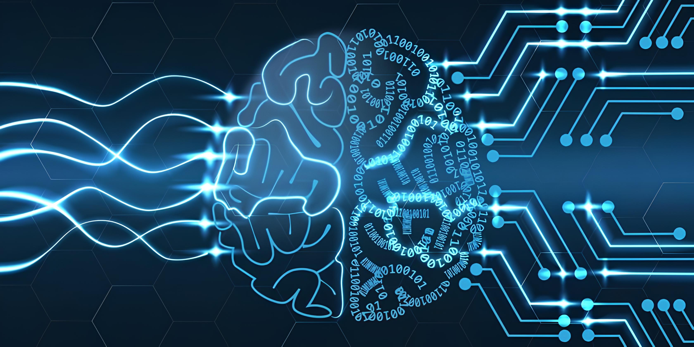
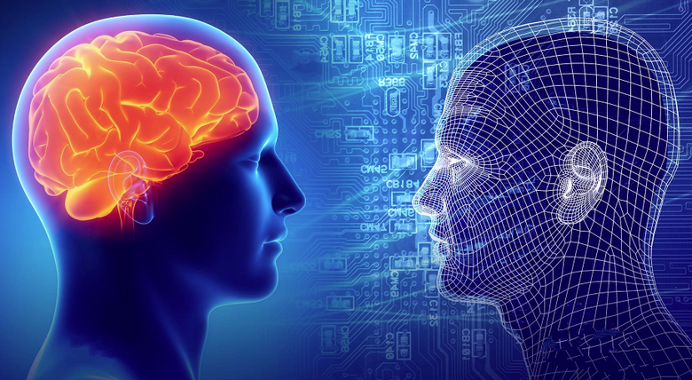
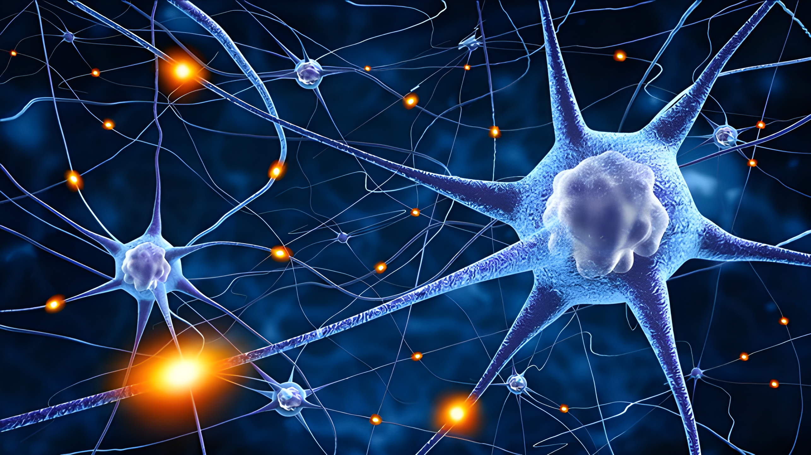
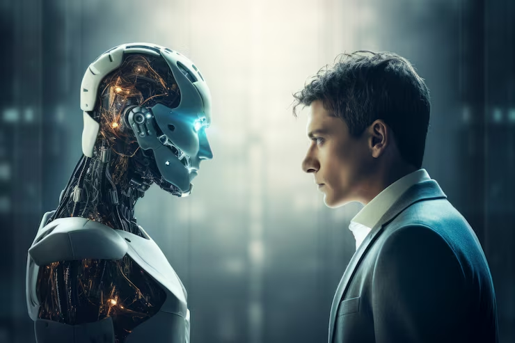
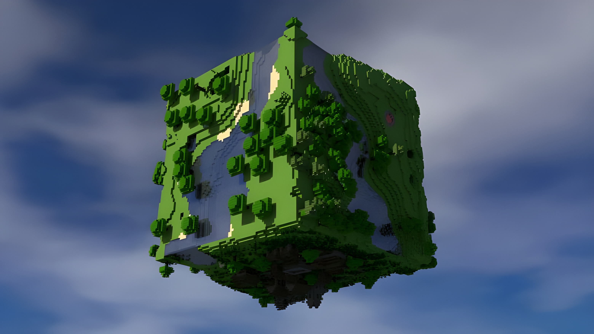
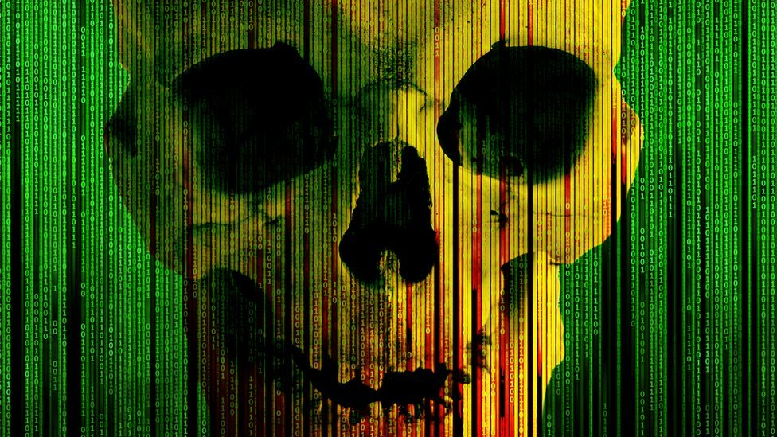

L'immortalità digitale è il trasferimento della personalità dal cervello a un computer. Immaginate i vostri pensieri, i vostri ricordi e la vostra personalità come codice software. L'idea è di creare un "backup" completo della vostra coscienza nel cloud. Convertendo le connessioni neurali in dati, una persona può essere eseguita su un server come un'emulazione. In definitiva, la personalità diventa puro software, non influenzata dall'invecchiamento cellulare e in grado di essere conservata indefinitamente.


Innanzitutto, viene creata una copia. Gli scienziati studiano la struttura delle connessioni cerebrali e la registrano in un file di grandi dimensioni. È come trasferire foto e contatti da un vecchio telefono a una chiavetta USB. Poi arriva il lancio. Questo file viene caricato in un potente computer in grado di "dare vita" ai dati. Non è più solo una cartella di file, ma un programma in esecuzione. Inizia a pensare e a rispondere a domande proprio come farebbe un essere umano. Infine, viene aggiunto uno schermo. Per poter comunicare con questa copia, essa viene connessa a Internet e a un computer. In definitiva, la persona continua a vivere all'interno del sistema, solo che ora, al posto di ossa e muscoli, ha microchip e codice.
Un esempio concreto è il progetto OpenWorm. Gli scienziati hanno preso un verme con soli 302 neuroni e ne hanno digitalizzato completamente il cervello. Questo "codice" è stato caricato in un robot su ruote. Senza alcun comando, il robot ha iniziato a comportarsi come un verme vivente: evitando gli ostacoli e cercando cibo. Questo dimostra che la coscienza (anche quella primitiva) è semplicemente un algoritmo che può essere eseguito dall'hardware.

La robotizzazione è come cambiare la scocca di uno smartphone. Una volta che la coscienza è digitalizzata in codice funzionante, può essere caricata non sul cloud, ma su un processore all'interno di un corpo metallico. Immaginate che, dopo la morte, la coscienza venga trasferita in un corpo di ferro dove si possa trascorrere l'eternità, poiché un corpo robotico è immune all'invecchiamento e alle malattie, e tutti gli arti e le parti sono sostituibili. Ma c'è un problema: la coscienza umana viene copiata nel robot, mentre l'originale muore.


Oltre alla robotica, è anche possibile inserire la coscienza in una sorta di gioco. La tua coscienza diventa il "dio" di una simulazione, dove puoi creare interi universi con trame diverse. Non ci sono limiti fisici e sei tu a dettare tutte le regole. Questo è un terreno di prova ideale per la scienza: gli scienziati possono simulare migliaia di scenari e prevederne gli esiti con assoluta precisione. Ciò trasforma l'immortalità digitale da semplice archivio di memoria in uno strumento infinito per la creatività e l'analisi della realtà.
In teoria è tutto perfetto, ma la realtà è ben diversa. Il rischio principale è la sicurezza delle informazioni. Se la tua coscienza è un software, puoi essere hackerato, infettato da un virus o copiato senza il tuo consenso. La morte digitale può sopraggiungere non per vecchiaia, ma per una semplice interruzione di corrente o la cancellazione di un file da parte di un amministratore di server. Inoltre, c'è la questione dell'autenticità. La copia nel cloud sarà davvero "te" o è semplicemente un'imitazione di alta qualità che si crede viva?
Finché non risolveremo questo paradosso filosofico, l'immortalità digitale rimane una zona ad alto rischio, dove il confine tra vita eterna e archiviazione eterna dei dati è troppo labile.
